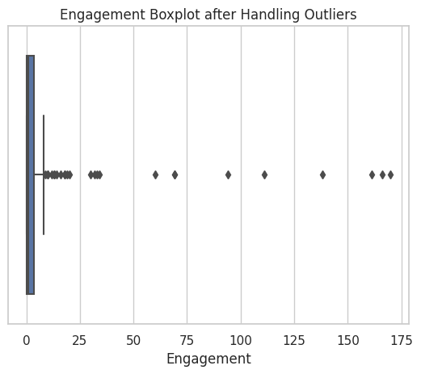
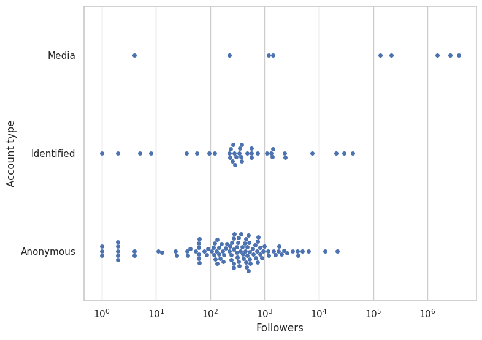
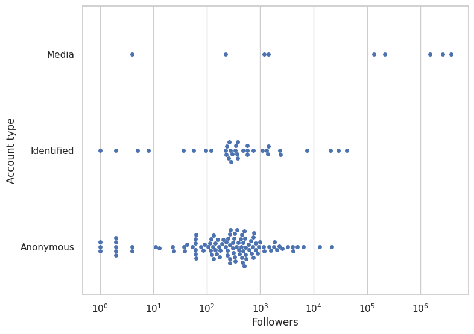

Data Preprocessing
Cleaning the Dataset
Before we started making visual charts and graphs to observe patterns and trends, we started to clean the data first. Cleaning the data is necessary in order to maximize our productivity and provide better quality information. This way, we can easily visualize without having to worry about missing or incorrect data.
Removing Non-essential Columns
We removed non-essential columns to our time-series analysis, such as ID, Timestamp, Group, Collector, Topic, Category, Remarks and Remarks. These fields were not necessary and were thus dropped. We left the other columns in our dataset since we wanted to observe if they may influence the distribution of our data.
Missing Values and Encoding Values
Our dataset has missing values in the Location and Account Bio columns. We filled this in by encoding 1 for if there was a location or an account bio and 0 if the field was empty. We also encoded other fields as well to make it more convenient for us to manipulate in our code.
We split the Tweet Type column based on the unique variables contained within (URL, Reply, Image, Video). We left Text out since every sample is of that type. After separating it into other columns, we then encoded it so that the columns' values would be 1 if it was of that type and 0 if not. A similar process was done to the Content Type column, which split into the Rational, Emotional and Transactional columns.
Handling Outliers
We needed to check for outliers to make sure that our data would not be skewed. By getting the standard deviation and z-scores of our data, we observed that we had a few outliers, particularly in the engagement metrics (likes, retweets, replies).
They are few in number, but may skew our data greatly, so we dropped these values.
Format Consistency
We manually corrected and re-edited the values in our fields to clean it up more, such as correcting typos, removing whitespace to avoid repetition of unique values (the dataset recognizes "Identified" and "Identified " as two separate values, for instance), and edited the formatting of the dates and times in the dataset for easier access if we needed to manipulate them.

 
